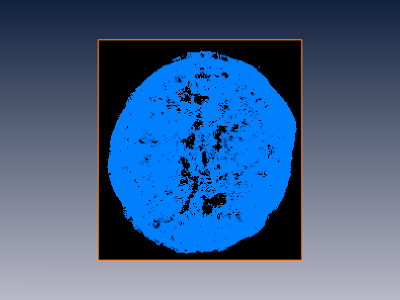

This tutorial illustrates advanced techniques using the Quantification+ Option.
To follow this tutorial you should have read the first Quantification+ Option tutorial and be familiar with basic manipulation of Amira and the Quantification module (Getting started with Quantification+ Option).
In this document often the term "enter the command ..." or "apply the command ..." occure. This means that you have to attach a Quantification tool to the input data (defined in the text) and enter the command "..." in the Visilog command line (at the bottom right of the Quantification Properties section). It supports automatic completion. After pressing enter you can see the new command in the Pipeline Section of the Quantification Properties (in the left). Here you can change the input and output data/names (as described in the text). Then press apply.
Notice that sometimes it could happen that you accidentally delete the Visilog colormaps. This is the case, when you for example have a binary image an you attach an OrthoSlice to it and the viewer just shows a black image (see if the colormaps "VisilogBinary.col" and "VisilogLabels.col" are under Pool/ Show Object). The colormaps can be reset with the Tcl command (command line at the bottom right of the Amira window):
Quantification createColormaps
At the end of this tutorial you will find a link to a corresponding demo script.
The 3D image used in this example is acquired by microtomography: An almost spherical
support contains catalyst and pores. The catalyst appears with dark levels in the image
(low intensity voxels). The pores and background appear with luminous levels
(high intensity voxels). Intermediate gray levels correspond to the support.
Figure 100:
Microtomography image of catalyst and pores
The goal of this example is to get a distribution of distances between the catalyst voxels and the background (exterior).
The algorithm may be divided into 3 steps:
- Object detection (mask of the object)
- Distance map of the catalyst
- Distribution of the catalyst distances
- Start by loading data/tutorials/quantification/Catalyst.im6 from the Amira root
directory.
- Attach an OrthoSlice module to the Catalyst.im6 image icon in the pool to display this image:
Figure 102:
The initial image
You can now start the first step for detection of the object by thresholding, and then closing.
Thresholding
- Attach a Quantification module to the Catalyst.im6 icon by right clicking on it (or left-click on the white triangle) and selecting Quantification from the Compute submenu in the popup menu.
- In the command tree, open the Thresholding folder and choose the Binarisation group. In the choices area shows select either the interactive command I_threshold or the command threshold. The input is set to the data connected to the Quantification module. Instead of using the command tree, you can directly enter the command name (I_threshold or threshold) in the command search text area.
Figure 103:
Pool and processing panel
The main difficulty of this step comes from the very similar intensities between background and pores.
For searching an appropriate threshold, you can take advantage of I_threshold interactive
command to fine tune the threshold parameters.
Remember to check though the whole volume by changing the slice number.
Other Amira modules can also be helpful for this task (see general Amira tutorials).
Here, thresholding the image between 0 and 225 gives a binary image where
- Intensity level = 1 -> support or catalyst (material)
- Intensity level = 0 -> pore or background
- Select the threshold parameter in the pipeline area, then change the threshold values to the range 0-225 in the choices area.
- Press the Apply button to start the command.
- If you have used the interactive command I_threshold, you will see the following dialog and have to press OK when done.
The I_threshold command has created a binary image (image label with only interior and exterior materials).
- If you attach an OrthoSlice to the resulting image, an appropriate colormap will be selected by default.

Figure 105:
Material binary image
Closing object
In order to detect the object you can now apply morphological operations.
The mathematical morphology operators are transformations based on shape and size criteria.
The morphological closing operator applied on a binary image gives another binary image where
- Small holes inside objects are filled
- Objects boundaries are smoothed
- Close objects are connected
Closing the material binary image fills the pores and thus gives a binary mask of the object.
- You can either attach a new Quantification module to the binary image resulting from the
previous I_threshold command, or reuse the Quantification module already in the pool and change
the inputs and commands in the pipeline area.
- Select the closing command (in Morphology folder, Open & Close group).
- In order to fill any holes inside the object, you have to change the parameter of the closing command to 6 in the pipeline (size of the structuring element or number of iterations). Such specific values may be found with a few trials and by checking through the whole volume by sliding an OrthoSlice for instance.
- Then push the Apply button.
Here is the result:
Figure 106:
Object binary image
The second step is to compute a distance map of the catalyst.
Applying the distance algorithm on a binary image gives a gray level image, where each voxel intensity represents the minimal distance in voxels from the object boundary.
The voxel intensities of the object distance map stand for
- Intensity level = 0 -> background
- Intensity level = 1 -> object envelope
- Others low level intensity -> part of the object close to the object envelope
- Others high level intensity -> part of the object far from the object envelope
- You can now apply the distance map command distxxx (Fast Morphology folder in complex Transform group) to the previous result image, leaving the default parameters for the command.
- Attach an OrthoSlice to the result to see the object's distance map.
Figure 107:
Object distance map
- Then threshold the initial image again between 0 and 100 and reconnect the OrthoSlice module.
This gives a binary image where
- Intensity level = 1 -> catalyst
- Intensity level = 0 -> support, pore or background
Figure 108:
Catalyst binary image
Masking
For computing the distance map of the catalyst we will use masking.
The mask operation takes a gray level image for first input, a binary image for second input (mask image), and provides a gray level image for output where
- Each black voxel of the mask image is set to 0 in the output image
- Each blue voxel of the mask image is set to the initial level from the gray image
Masking the distance map image by the catalyst image gives a gray image where
- Each non null intensity represents a voxel of the catalyst
- The intensity value is equal to the distance in voxels from the object envelope
- Apply the mask command to the previous result image
(the first input is the object distance map image, the second input is the catalyst binary image).
- Attach an OrthoSlice to the result to see the object's distance map.
Figure 109:
Catalyst distance map
Now we can get the distribution of the distances.
For consistent results, we have to consider the voxel calibration: Multiplying the distance image by the voxel size
converts the image intensities into the metric system (micrometers).
- Use the Visilog command multiply on the catalyst distance map with second input set to 5 (assuming a voxel size of 5 micrometers). Select the second input in pipeline area and type 5.
Figure 110:
Multiply command
- Then retrieve the maximum value, either with the Info port displayed in Properties panel when selecting the image icon in the pool, or by using the Visilog extrema command.
- Then use the histogram command histclass to compute and plot for each gray level i, the number of voxels at intensity i. The number of points per each level will be graphed as a histogram. Set the range input to {1,460} and interval to 5.

Figure 111:
Histogram settings
- Applying the histogram command on the catalyst distance map generates a graph showing the number of catalyst voxels located at a given distance from the object envelope.

Figure 112:
Distribution of the distances
The whole processing sequence can be put in a script in order to automate analysis for routine tasks.
For details about scripting Visilog with Amira, see the Quantification module help and the provided demonstration example.
A demo script corresponding to this tutorial can be found in data/tutorials/quantification/Catalyst.hx
It uses a script object located in data/tutorials/quantification for automating the processing.
- Once the script is loaded, you can select the script object (blue icon) and press start processing in the Properties panel to start the processing.
- There may be some interactive commands possibly requiring your input and validation. Just press OK to follow the tutorial steps. These interactive commands could be easily replaced by commands with pre-set parameters for a fully automatic processing.


{kind=link}
{kind=link}
{kind=link}
{kind=link}
{kind=link}
{kind=link}
{kind=link}
{kind=link}
{kind=link}
{kind=link}
{kind=link}